[Part 0.1] I first found the intrinsics and distortion coefficients of
my phone camera using images such as the one below with 6 ArUco tags,
from different distances and angles. The calibration was relatively successful,
with an RMS of 0.724.
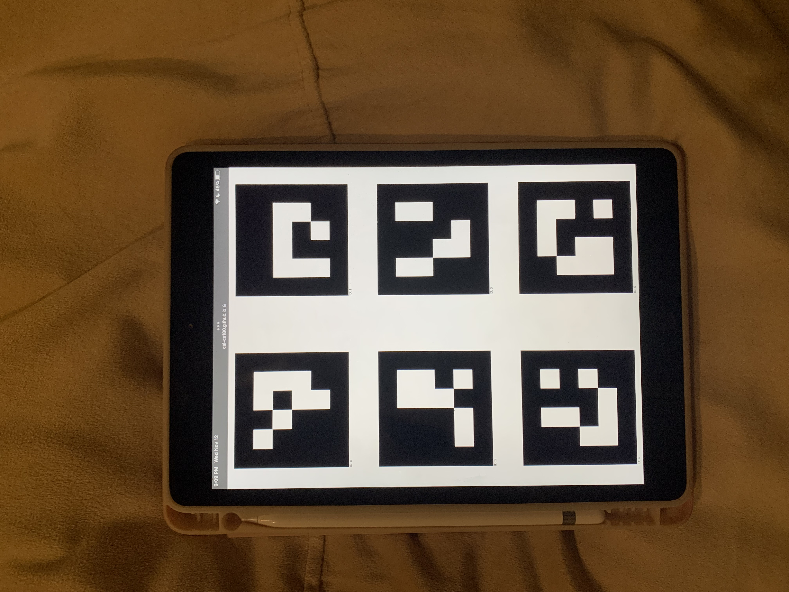
6 ArUco tags for intrinsics calibration
[Part 0.2 - 0.4] I then used the same settings on my phone camera to capture
images of a stuffed bear (and one ArUco tag for calibrating world coordinates)
from different angles for NeRF representation in later parts. For each image,
I used cv2.solvePnP() to determine the pose of the camera (camera
to world matrix), with the cloud of camera poses and images displayed below. There
are no images taken from one angle, since it would block the single ArUco tag and
disables world coordinate calculation. Finally, I then undistorted the images
using the solved distortion coefficients.
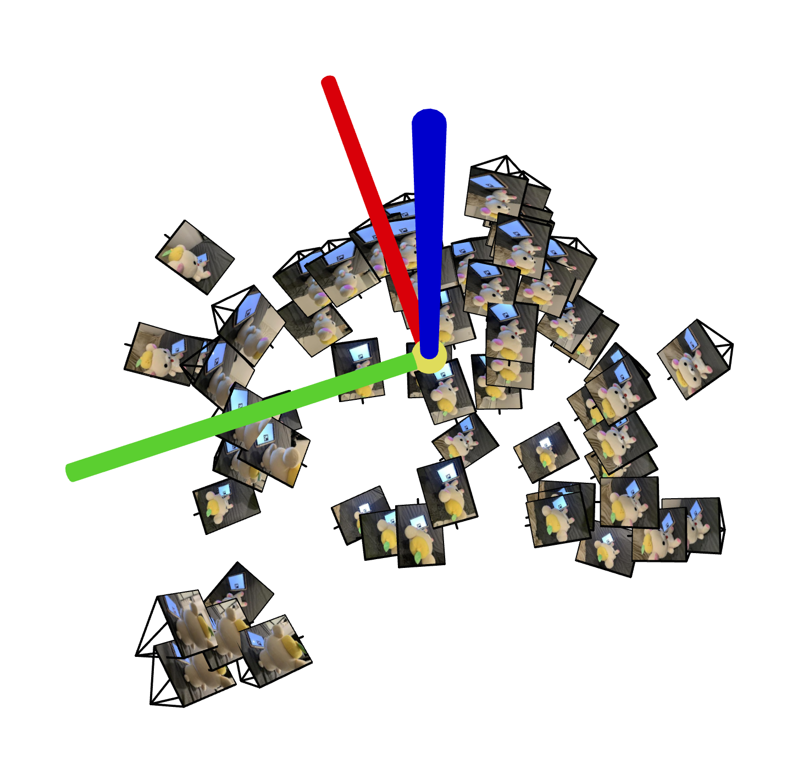
Cloud of cameras (top)
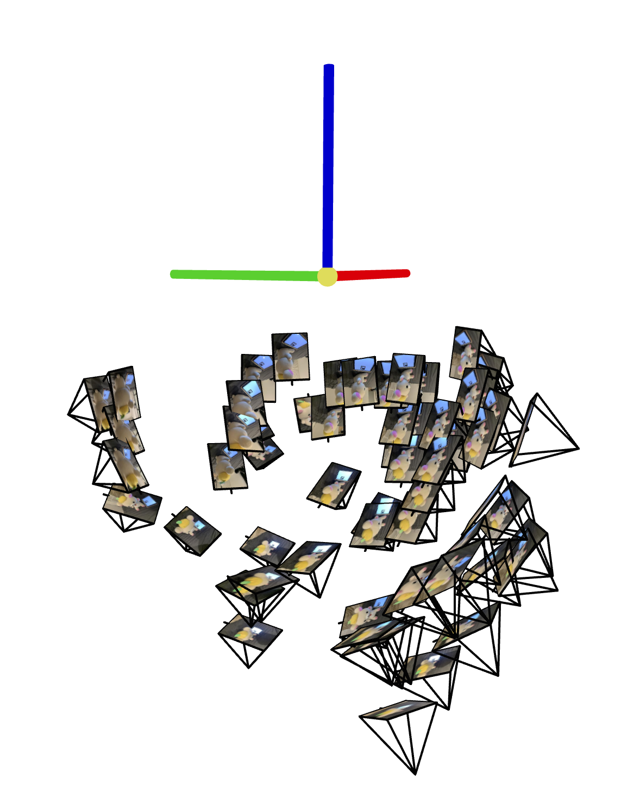
Cloud of cameras (side)
Part 1
In this part, I trained a simple neural network to represent a 2D image for the
provided test image and an image from Part 0.
I used the following architecture and trained for 1000 iterations
with a learning rate of 0.01:
positional encoding with max freq L = 10
4 linear layers x width 256 nodes
ReLU activation between linear layers
Sigmoid activation before output to confine
RGB values to [0, 1]
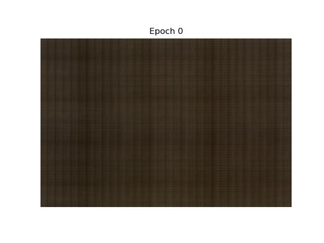
Fox image epoch 0
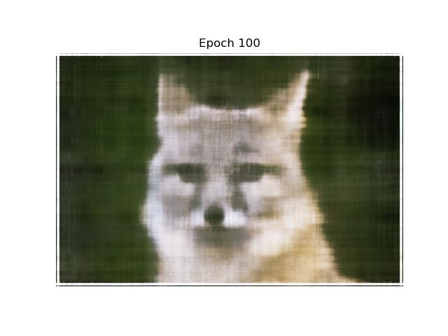
Fox image epoch 100
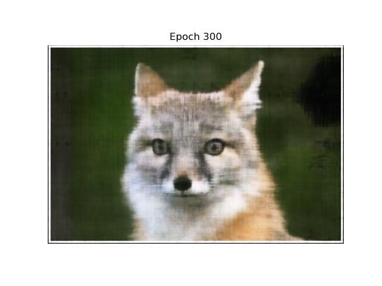
Fox image epoch 300
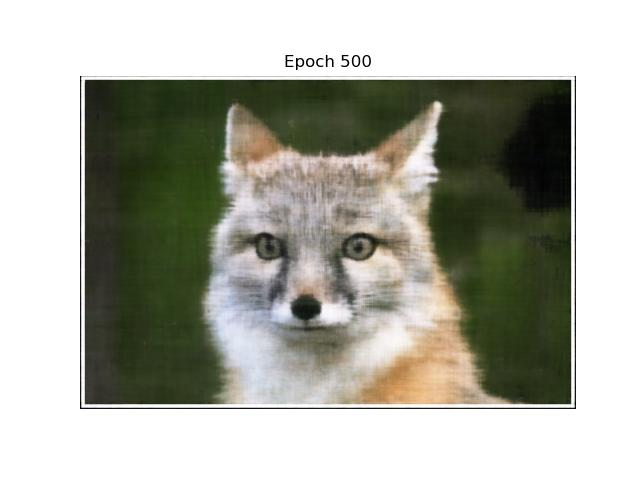
Fox image epoch 500
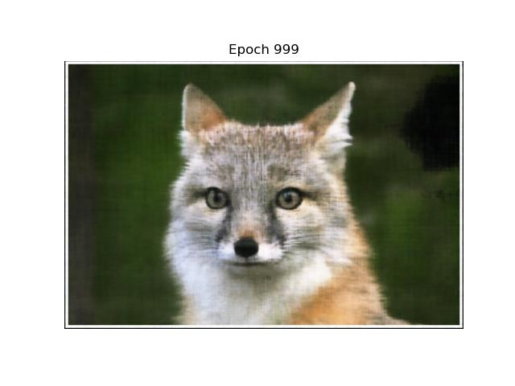
Fox image epoch 999
Fox image target
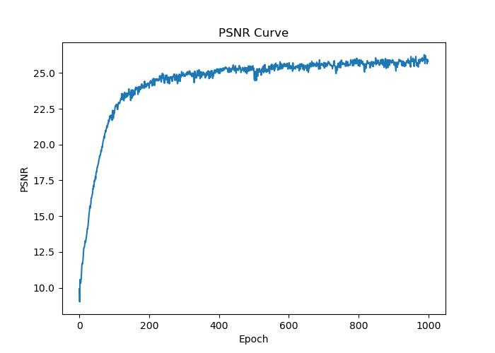
Fox image training PSNR curve
This same architecture did a good job on a photo from
Part 0, although performed worse than the fox test image,
likely because the input images are very large (3000 x 4000).
Layer width: below, I display models trained on layer
widths of 16 versus 256; in the model using the same positional
encoding but less parameters in the layers, we can see that although
high frequency details are present, this is overall not a truthful
representation of the input image, as the limited neurons are limited on
the capacity of information that can be captured
Positional encoding frequency: below, I also display models trained on
positional encoding max frequency of 2 vs 10; as is very obvious in
the model with the same layer width but low positional encoding frequency,
the image recapitulates the overall colors of the original image very well, but
there are only smoothed, low-frequency features and no details
In the following parts, I train a NeRF representation of
the 3D scene I took images from in Part 0.
The following parts were implemented as part of the Dataloader
class for the NeRF model.
[Part 2.1] Coordinate conversions
camera_to_world converts
x_w = c2w @ x_c
pixel_to_camera converts
x_c = s * (K_inv @ uv)
pixel_to_ray uses the
previous two functions to get the ray origin ray_o
(t vector from c2w) and the ray direction
ray_d = x_w - ray_o, normalized using its norm
[Part 2.2] Sampling
sample_rays(n) from the image
(which is essentially
__get_item___ of the DataLoader) is done by first
pre-computing all rays for all pixels from all images using the
functions from Part 2.1, then randomly selecting N rays from
that flattened list of pre-computed pixels and their accompanying
ray_o and ray_d
sample_along_rays(ray_o, ray_d, perturb=True, near, far, n_samples=64)
samples 64 points from along the provided ray using the simple equation
x = ray_o + ray_d * t. To try to cover more of the volume during training,
noise is added to t, which randomly samples [0, bin_width] (independently for
each sample and each ray) to slightly shift where the point is placed.
[Part 2.3] An example visualization of 50 rays drawn during a training step
are shown below.
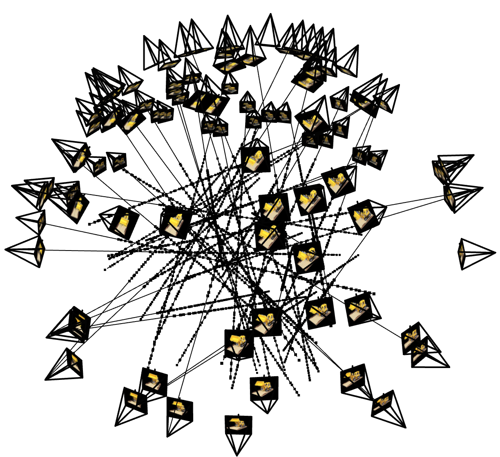
50 rays sampled during training iteration
[Part 2.4] The same model architecture is used on both the test lego dataset
and my custom scene from Part 0.
input point on ray is positionally encoded using a
max frequency of L=10
point passes through 8 fully connected layer of 256
neurons and ReLU activations, with a skip connection re-injecting the
encoding after 4 layers
density is predicted by a linear layer projecting from 256 to
1 dimension; IMPORTANTLY, I do not use ReLU activation after, because
as observed by others and myself (Ed #249d), ReLU tended to clamp the
density values to around 0, which resulted in the model tending to predict
entirely dark images. Softplus activation is used instead to try to better
encourage non-zero density values
ray direction is positionally encoded using max frequency of L=4
RGB values are predicted by injecting ray direction, an additional
256 -> 128 layer, ReLU activation, then a final 128 -> 3 dim layer with
sigmoid activation to restrict RGB values to [0, 1]
[Part 2.5] volrend(sigmas, rgbs, step_size) is implemented as part
of the training loop (so that can be differentiated and backpropagated during training)
using the equation provided. For simplification, instead of having the true deltas / step
sizes sampled with perturbation from training, I just take the bin size of the point sampling as
delta for every point.
Lego Dataset Results
Training on the provided lego dataset was done for 1500 iterations, using
the provided learning rate of 5e-4 and near/far parameters of 2.0 and 6.0.
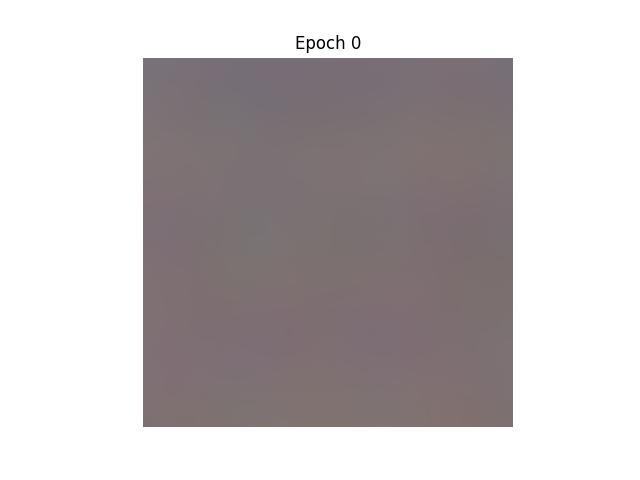
Lego NeRF epoch 0
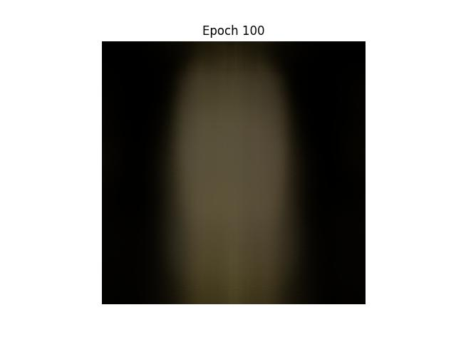
Lego NeRF epoch 100
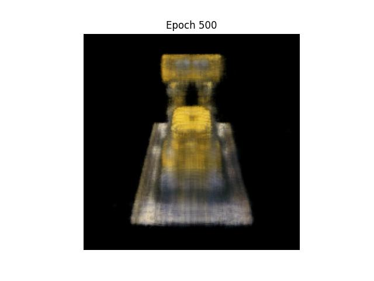
Lego NeRF epoch 500
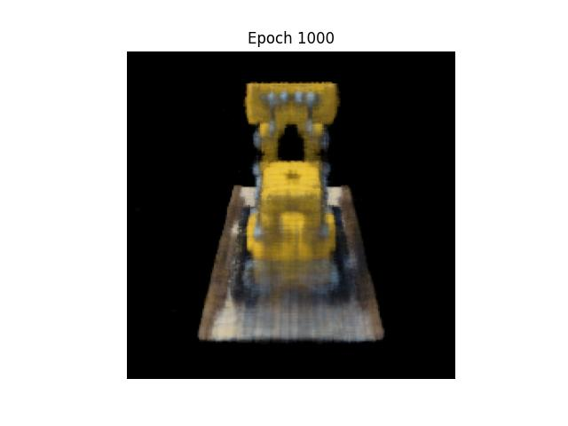
Lego NeRF epoch 1000
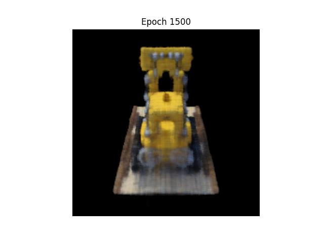
Lego NeRF epoch 1500
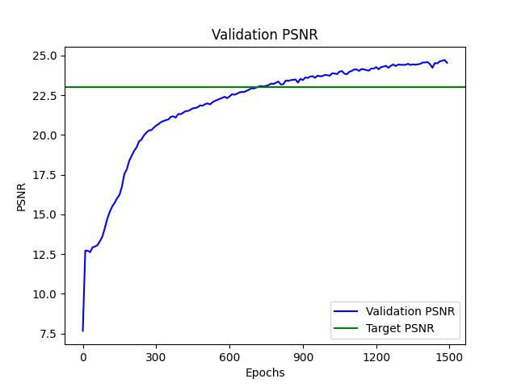
Lego NeRF validation PSNR (average on all 10 images)
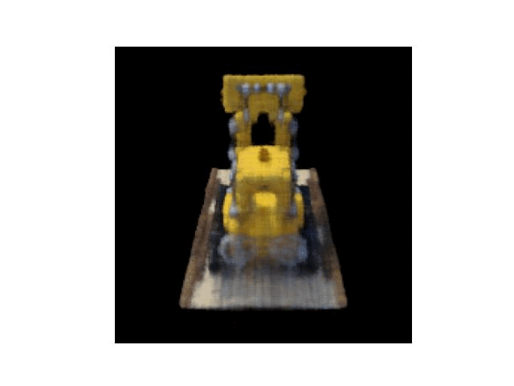
Lego NeRF scene (60 novel test camera poses)
Part 2.6
Training on my own dataset was done for 2000 iterations. Although I
initially trained with the given learning rate of 5e-4, the validation images
were improving too slowly even after 3000 iterations despite "looking"
correct, so I increased learning rate to 5e-3. Most importantly, since my
images were taken much closer to the object, I had to try out a couple different
(near, far) parameters, but the best results came from (0.25, 3) meters. The training
was overall successful in replicating the main object (stuffed bear) and the ArUco tag (if I
were to do this again, I would clear the scene in the background to reduce noise)
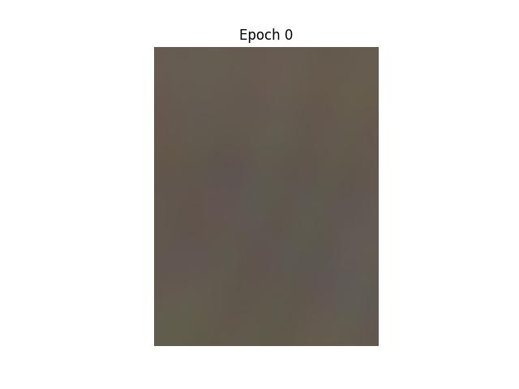
Bear NeRF epoch 0
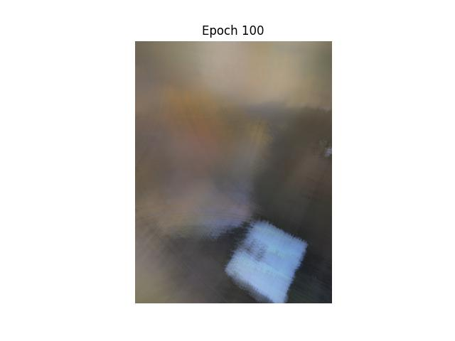
Bear NeRF epoch 100
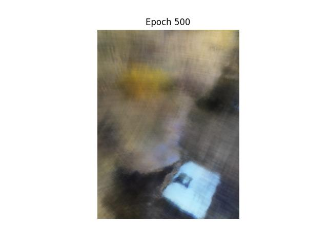
Bear NeRF epoch 500
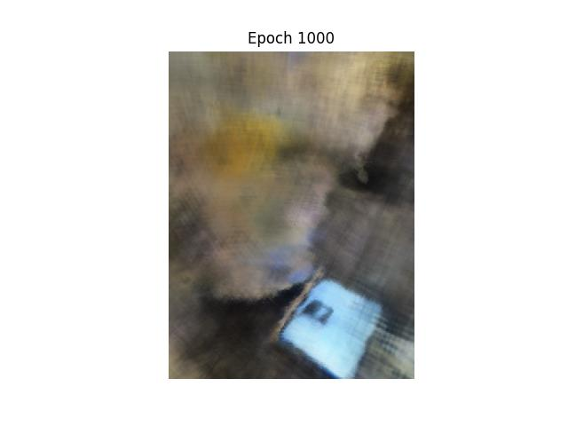
Bear NeRF epoch 1000
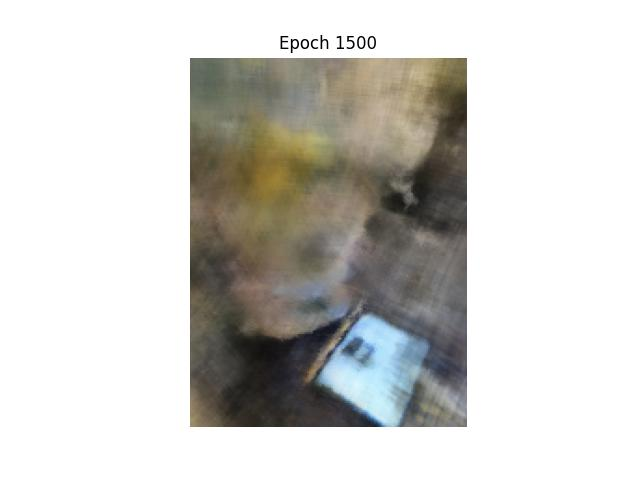
Bear NeRF epoch 1500
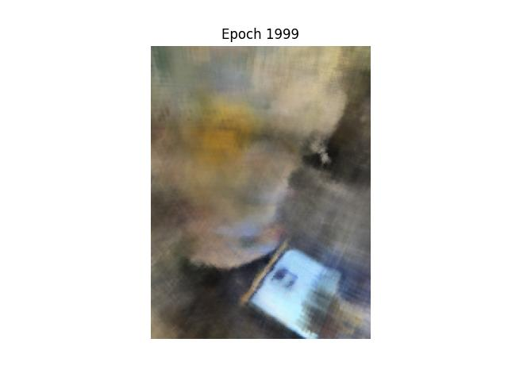
Bear NeRF epoch 1999
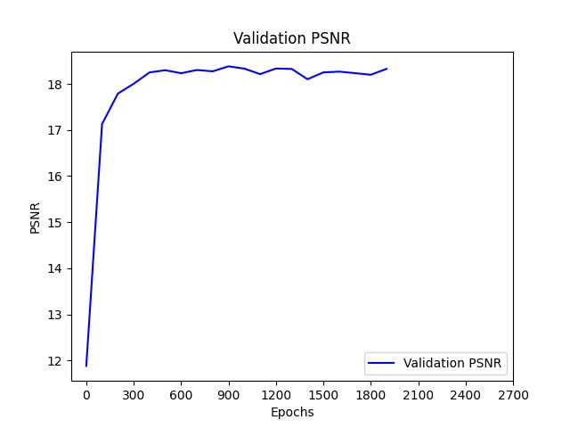
Bear NeRF validation PSNR (average on all 6 images)
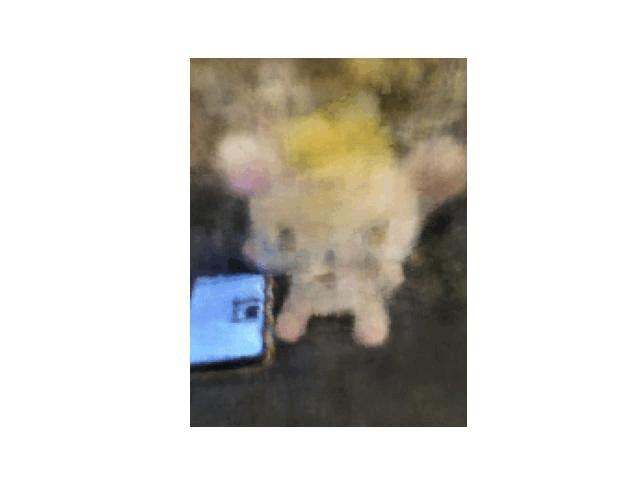
Bear NeRF scene (50 novel test camera poses)